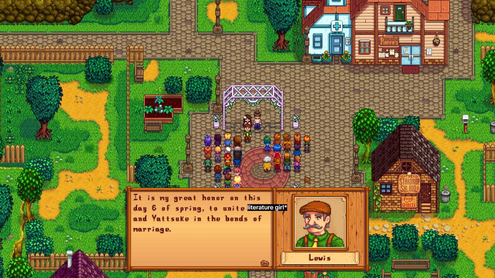
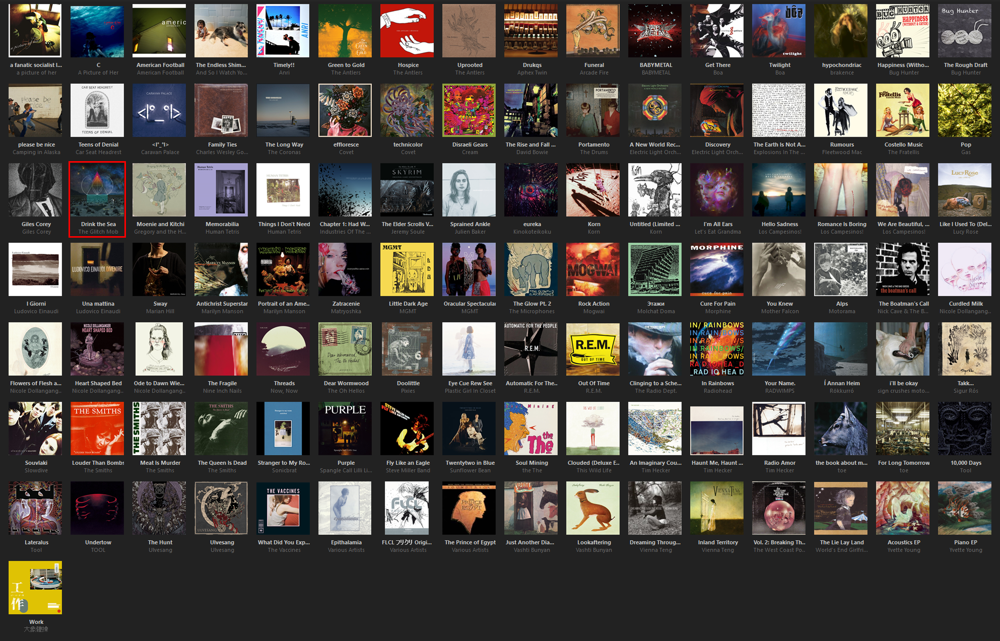
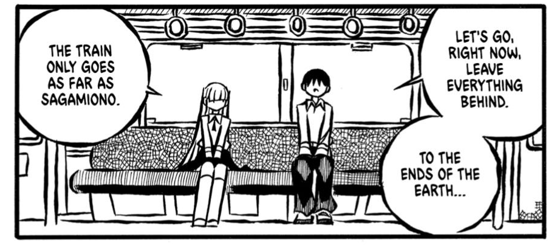

Stream
A by-chance-chronological stream of thoughts; a small but growing collection of things that I like or find poignant, such as novel excerpts, Bible verses and songs.
A collection of beautiful things.
2026/08/20 — 23:05
2026/08/20 — 22:59
Yes! I Am A Long Way from Home — Mogwai
2026/08/18 — 21:07
"The prevailing attitude, so cheerful and forward-looking on the surface, derives from a narcissistic impoverishment of the psyche and also from an inability to ground our needs in the experience of satisfaction and contentment. Instead of drawing on our own experience, we allow experts to define our needs for us and then wonder why those needs never seem to be satisfied."
— Christopher Lasch, 'The Culture of Narcissism'
2026/08/18 — 20:52
And they said romance was dead...

2026/08/09 — 15:22
2026/08/09 — 15:06
"Come to me with beauty; I require it to stay alive.
I am not talking of precious gifts, nor do I want a dolled-up, dutiful, and well-assessed array of tender words.
Hurl the clash of what you have pocketed from this day at my feet, and then be brave enough to look me in the eye.
Push the boundary of two minds till it stretches, till they are two bodies in one embrace, and a moment of understanding, or acceptance, or blind faith, and a sense of the infinite jump and jive.
That, to me, is beauty — and I require it to stay alive."
— Maire Saaritsa
2026/08/01 — 01:14
"All at once we were madly, clumsily, shamelessly, agonizingly in love with each other; hopelessly, I should add, because that frenzy of mutual possession might have been assuaged only by our actually imbibing and assimilating every particle of each other's soul and flesh."
— Vladimir Nabokov, 'Lolita'
2026/08/01 — 01:12
"The days were quiet. They did not feel particularly quiet or happy, but through them ran the sense, like an underground river, that there would come a time when these days would be looked back on as happiness, all that life could give of contentment and peace."
— John McGahern, 'That They May Face the Rising Sun'
2026/08/01 — 01:08
"When you will not fly into a passion people know you are stronger than they are, because you are strong enough to hold in your rage, and they are not, and they say stupid things they wish they hadn't said afterward. There's nothing so strong as rage, except what makes you hold it in — that's stronger. It's a good thing not to answer your enemies."
— Frances Hodgson Burnett, 'A Little Princess'
2026/07/28
"If all else perished, and he remained, I should still continue to be; and if all else remained, and he were annihilated, the universe would turn to a mighty stranger: I should not seem a part of it."
— Emily Brontë, 'Wuthering Heights'
2026/04/19
"I am constantly trying to communicate something incommunicable, to explain something inexplicable, to tell about something I only feel in my bones and which can only be experienced in those bones."
— Franz Kafka, 'Letters to Milena'
2026/04/19
"The beginning of [...] love is the will to let those we love be perfectly themselves, the resolution not to twist them to fit our own image. If in loving them we do not love what they are, but only their potential likeness to ourselves, then we do not love them: we only love the reflection of ourselves we find in them."
— Thomas Merton, 'No Man Is an Island'
2025/09/28
Pinterest added a collage feature a while ago, and I was trying to figure out how to use it today, so I made a collage of some of my favourite characters.
2025/04/30 — 13:25
"Innocence, once lost, can never be regained. Darkness, once gazed upon, can never be lost."
— John Milton
2025/02/13 — 18:24
"Since Nabokov is the living master of English prose, and knows that he is, his enactment of an apology is just that, a part of his supremely skillful act. For a writer who makes no distinction between life and art, who has said that "reality" is the one word that must always be used in quotes, there is nothing outside of the act."
2025/02/13 — 18:21
"Vladimir Nabokov, author of the Russian translation of Alice in Wonderland, has now provided his native literature with another little girl, his own Lolita. This latter accomplishment is not only a victory of art but also a potential victory for criticism, for whenever we are faced with a thing that cannot be measured by the tools we have, we must invent others. Beckett's and Nabokov's rewriting of their own works in their other languages is a very special form of literary work, closely resembling but not identical with translation. The difference between these feats and ordinary translation — and let me not suggest that our present tools are up to "ordinary translation" — can only be surmised, but one suspects that it is like the little abyss between zero and one."
2024/11/22 — 18:09
Random update: I got a job in a Christian bookstore recently. The literature girl dream has finally been achieved. Life is good.
2024/11/07 — 12:34
“...with a rush of feeling he felt that this must be happiness. As soon as the thought came to him, he fought it back, blaming the whiskey. The very idea was as dangerous as presumptive speech: happiness could not be sought or worried into being, or even fully grasped; it should be allowed its own slow pace so that it passes unnoticed, if it ever comes at all.”
— John McGahern, 'That They May Face the Rising Sun'
2024/11/07 — 12:29
"If God delighted to enlighten us about the fundamental facts of existence, then either he told us the simple truth, a truth which all must accept, or he wasted his time. If he gave to humanity a message that everyone was free to interpret in a hundred different ways, he might as well never have spoken at all. Such a course is incompatible with his infinite wisdom and goodness."
— Arthur H. Ryan, 'Mirroring Christ's Splendour'
2024/08/30 — 25:53
"Tanto è il bene ch'io aspetto, ch'ogni pena m'è diletto."
So great is the good that I expect, that any pain is a pleasure.
— 'The Little Flowers of St. Francis'
2024/07/06 — 10:13
"You are the knife I turn inside myself; that is love. That, my dear, is love."
— Franz Kafka, 'Letters to Milena'
2024/07/02 — 22:41
"Winter is the mother-nurse of Spring,
Lovely for her daughter's sake,
Not unlovely for her own:
For a future buds in everything;
Grown, or blown,
Or about to break."
— Christina Rossetti, 'There Is A Budding Morrow In Midnight'
2024/04/27 — 10:22
"And if I have prophetic powers, and understand all mysteries and all knowledge, and if I have all faith, so as to move mountains, but do not have love, I am nothing."
— 1 Corinthians 13:2
2024/04/26 — 18:41
"When pride comes, then comes disgrace;
but with the humble is wisdom."
— Proverbs 11:2
2024/04/26 — 18:33
"Domine Iesu Christe, Fili Dei, miserere mei, peccatoris."
— The Jesus Prayer
2024/04/26 — 18:28
"The chief object of the devil's work on Earth is to fill us with pride."
— St. Teresa of Ávila, 'The Way of Perfection'
2024/04/26 — 18:26
"I need go no further than my own heart to find the source of all violence in the world."
2024/04/15 — 02:12
"Did you ever know, dear, how much you took away with you when you left? You have stripped me even of my past, even of the things we never shared."
— C.S. Lewis, 'A Grief Observed'
2024/04/15 — 02:11
"God has not been trying an experiment on my faith or love in order to find out their quality. He knew it already. It was I who didn't. In this trial He makes us occupy the dock, the witness box, and the bench all at once. He always knew that my temple was a house of cards. His only way of making me realize the fact was to knock it down."
— C.S. Lewis, 'A Grief Observed'
2024/04/15 — 02:10
"No one ever told me that grief felt so like fear. I am not afraid, but the sensation is like being afraid. The same fluttering in the stomach, the same restlessness, the yawning. I keep on swallowing.
At other times it feels like being mildly drunk, or concussed. There is a sort of invisible blanket between the world and me. I find it hard to take in what anyone says. Or perhaps, hard to want to take it in. It is so uninteresting. Yet I want the others to be about me. I dread the moments when the house is empty. If only they would talk to one another and not to me."
— C.S. Lewis, 'A Grief Observed'
2024/04/15 — 01:37
I've been trying to listen to albums instead of random songs collated into playlists lately, because in an ever-increasingly digital age, one of the detriments of modern music streaming methods is the fact we often don't bother listening to albums holistically anymore. Here are some of the albums I've downloaded and been listening to:

Credit to capstasher's spectacular music taste for the Electric Light Orchestra album recommendations. And Drink The Sea. And Steve Miller Band. (Read: he's a pensioner.)
Do send music recommendations, fellow Neocities users.
2024/02/27 — 17:26
2024/02/27 — 17:25
“Love flourishes in silence, and hidden actions have a particular efficacy.”
— Mother Abbess, St Cecilia’s Abbey
2024/02/27 — 17:24
"What is born of earth goes back to earth: but the growth from heavenly seed returns whence it came, to heaven."
— Marcus Aurelius, 'Meditations' (Book Seven)
2024/02/25 — 12:47
"If you start laughing at anyone who’s ugly or deformed everyone will start laughing at you. You’ll have made an awful fool of yourself by implying that people are to blame for things they can’t help – for, although one’s thought very lazy if one doesn’t try to preserve one’s natural beauty, the Utopians strongly disapprove of make-up. Actually, they’ve found by experience that what husbands look for in their wives is not so much physical beauty, as modesty and a respectful attitude towards themselves. A pretty face may be enough to catch a man, but it takes character and good nature to hold him."
— St. Thomas More, 'Utopia' (Book Two)
2024/02/25 — 12:45
"Having put the marvellous system of the universe on show for human beings to look at – since no other species is capable of taking it in – He must prefer the type of person who examines it carefully, and really admires His work, to the type that just ignores it and like the lower animals remains quite unimpressed by the whole astonishing spectacle."
— St. Thomas More, 'Utopia' (Book Two)
2024/02/25 — 12:42
"Everything in any way beautiful has its beauty of itself, inherent and self-sufficient: praise is no part of it."
— Marcus Aurelius, 'Meditations' (Book Four)
2024/02/25 — 12:40
"No action in the human context will succeed without reference to the divine."
— Marcus Aurelius, 'Meditations' (Book Three)
2023/12/28 — 18:41
"You lose the rhythm of your own breathing and instead you stare hard at the hairs on his wrists. It is now that you think for the first time: I am neither an especially smart person, nor an especially talented person. It is not that I am lazy or that I haven't found the right path or that I've just made a couple of mistakes. I am average, and perhaps not even that, and there is nothing I can do to fix it. You wish desperately, again, to be the short-haired woman in the frame on the desk; the woman with a job and a husband and certainty about who she is. It is now that you do start crying, silently. Mr Hughes inhales deeply before speaking again, and you wonder how often he has to make someone like you confront the reality of themself."
— Susannah Dickey
2023/10/11 — 22:00
"When Christ at a symbolic moment was establishing His great society, He chose for its cornerstone neither the brilliant Paul nor the mystic John, but a shuffler, a snob, a coward – in a word, a man. And upon this rock He has built His Church, and the gates of Hell have not prevailed against it. All the empires and the kingdoms have failed, because of this inherent and continual weakness, that they were founded by strong men and upon strong men. But this one thing, the historic Christian Church, was founded on a weak man, and for that reason it is indestructible. For no chain is stronger than its weakest link."
— G.K. Chesterton
2023/04/08 — 10:28
“Do not spoil what you have by desiring what you have not; remember that what you now have was once among the things you only hoped for.”
— Epicurus
2023/04/07 — 12:05
"Most living things don’t need to remind themselves that life is precious. They simply pass the time. An old cat can sit in the window of a bookstore, whiling away the hours as people wander through. Blinking calmly, breathing in and out, idly watching a van being unloaded across the street, without thinking too much about anything. And that’s alright. It’s not such a bad way to live.
So much of life is spent this way, in ordinary time. There’s no grand struggle, no sacraments, no epiphanies. Just simple domesticity, captured in little images, here and there. All the cheap little objects. The jittering rattle of an oscillating fan; a pair of toothbrushes waiting in a cup by the sink. There’s the ragged squeal of an old screen door, the dry electronic screech of a receipt being printed, the ambient roar of someone showering upstairs. And the feeling of pulling on a pair of wool socks on a winter morning and peeling them off at the end of the day. These are sensations that pass without a second thought. So much of it is barely worth noting.
But in a couple hundred years, this world will turn over to a completely different cast of characters. They won’t look back and wonder who won the battles or when. Instead, they’ll try to imagine how we lived day to day, gathering precious artifacts of the world as it once was, in all its heartbreaking little details. They’ll look for the doodles left behind in the margins of our textbooks, and the dandelions pressed in the pages. They’ll try to imagine how our clothes felt on our bodies, and what we ate for lunch on a typical day, and what it might’ve cost. They’ll wonder about our superstitions, the weird little memes and phrases and jokes we liked to tell, the pop songs we hummed mindlessly to ourselves. They’ll try to imagine how it must’ve felt to stand on a street corner, looking around at the architecture, hearing old cars rumbling by. The smell in the air. What ketchup must have tasted like.
We rarely think to hold on to that part of life. We don’t build statues of ordinary people. We don’t leave behind little plaques to commemorate the milestones of ordinary time:
HERE ON THE TWENTY FIFTH OF MARCH
NINETEEN HUNDRED AND NINETY FOUR
SOME NEIGHBORS WENT OUT WALKING THEIR DOGS
THE CHILDREN TOOK TURNS HOLDING THE LEASH
IT WAS A FUN AFTERNOON FOR EVERYONE INVOLVED
But it all still happened. All those cheap and disposable experiences are no less real than anything in our history books, no less sacred than anything in our hymnals. Perhaps we should try keeping our eyes open while we pray, and look for the meaning hidden in the things right in front of us: in the sound of Tic Tacs rattling in a box, the throbbing ache of hiccups, and the punky smell that lingers on your hands after doing the dishes. Each is itself a kind of meditation, a reminder of what is real.
We need these silly little things to fill out our lives, even if they don’t mean all that much. If only to remind us that the stakes were never all that high in the first place. It’s not always life-and-death. Sometimes it’s just life — and that’s alright."
— John Koenig, 'The Dictionary of Obscure Sorrows'
2023/04/07 — 11:56
"Think not that I am come to send peace on earth: I came not to send peace, but a sword."
— Matthew 10:34, KJV
2023/04/07 — 11:50
"If every second of our lives recurs an infinite number of times, we are nailed to eternity as Jesus Christ was nailed to the cross. It is a terrifying prospect. In the world of eternal return the weight of unbearable responsibility lies heavy on every move we make. That is why Nietzsche called the idea of eternal return the heaviest of burdens (das schwerste Gewicht).
If eternal return is the heaviest of burdens, then our lives can stand out against it in all their splendid lightness.
But is heaviness truly deplorable and lightness splendid?
The heaviest of burdens crushes us, we sink beneath it, it pins us to the ground. But in the love poetry of every age, the woman longs to be weighed down by the man's body. The heaviest of burdens is therefore simultaneously an image of life's most intense fulfillment. The heavier the burden, the closer our lives come to the earth, the more real and truthful they become.
Conversely, the absolute absence of a burden causes man to be lighter than air, to soar into the heights, take leave of the earth and his earthly being, and become only half real, his movements as free as they are insignificant.
What then shall we choose? Weight or lightness?"
— Milan Kundera, 'The Unbearable Lightness of Being'
2023/03/20 — 21:49
"To have faith in Christ means, of course, trying to do all that He says. There would be no sense in saying you trusted a person if you would not take his advice. Thus if you have really handed yourself over to Him, it must follow that you are trying to obey Him. But trying in a new way, a less worried way. Not doing these things in order to be saved, but because He has begun to save you already. Not hoping to get to Heaven as a reward for your actions, but inevitably wanting to act in a certain way because a first faint gleam of Heaven is already inside you.”
— C.S. Lewis, 'Mere Christianity'
2023/03/20 — 21:33
"Be not deceived; God is not mocked: for whatsoever a man soweth, that shall he also reap. For he that soweth to his flesh shall of the flesh reap corruption; but he that soweth to the Spirit shall of the Spirit reap life everlasting."
— Galatians 6:7-8, KJV
2023/02/27 — 22:36
"Western civilisation is made entirely of the alphabet. Their literature, laws, history, castles, churches, looks, skies, clouds, mountains, rivers, even their thoughts, are all solely made of the twenty-six letters of the alphabet. Basically, it's Lego.
Creating Lego structures of our own design doesn't equal us creating something new. All we're doing is assembling prebuilt parts. In other words, it's not us who are the real creators, but the Lego company. Don't you think?
The alphabet's the same. Everything that people think about using words is nothing more than a rearrangement of the thoughts of the alphabet's creator. So, we'll be playing with Lego today."
— Kodama Maria Bungaku Shuusei
